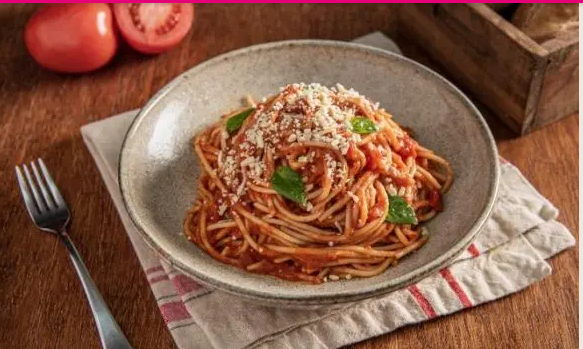

Receta de espaguetis con salsa casera

Preparacion de la receta
Ingredientes
- 3 Piezas Jitomate cocidos en agua caliente
- 1/2 Pieza Cebolla cocidos en agua caliente
- 1/2 Pieza Ajo
- 1/2 Taza Aceite de oliva
- 1 Taza Puré de tomate natural
- 2 Cubos Concentrado de Tomate con Pollo CONSOMATE®
- 4 Piezas Hoja de laurel
- 1 Cucharadita Orégano seco molido
- 1 Paquete Pasta de espagueti (200 g)
- 1/4 Taza Albahaca fresca hojas de albahaca, desinfectadas y picadas
- 100 Gramos Queso parmesano rallado
Licual
Para la salsa, licúa los tomates con la cebolla, el ajo, el aceite de oliva, el puré de tomate y el Concentrado de Tomate con Pollo CONSOMATE®. Calienta a fuego medio hasta que hierva ligeramente, añade las hojas de laurel y el orégano, cocina por 3 minutos más.
Presentacion
Mezcla la pasta previamente cocida y escurrida con la salsa, sirve y decora con las hojas de albahaca y el queso parmesano.
Ahora a disfrutar de un delicioso platillo